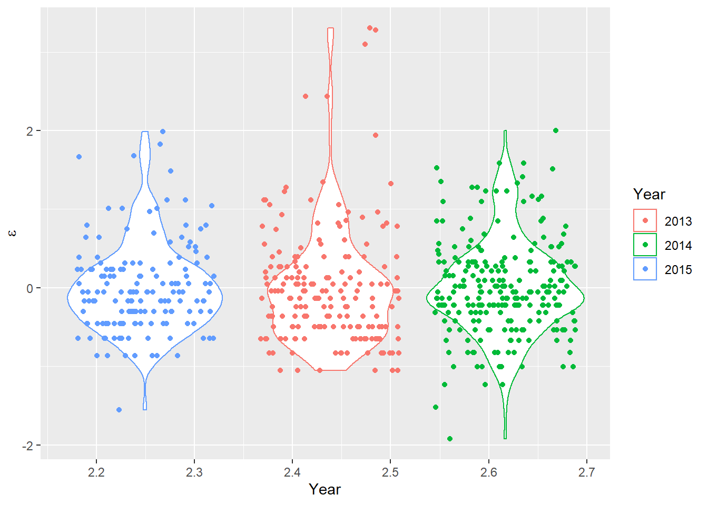

7.2 Linear regression
We have now considered the case of what to do when we have a numerical response and categorical explanatory variable(s) with any number of groups or grouping variables. But, what if we have both a numerical response and numerical explanatory variables? Fear not, there is a stat for that! Now we are entering the realm of correlation and regression. Next week, we’ll show that ANOVA is, in fact, just a special kind of regression.
When we fit a linear regression model, we are trying to explain relationships between some response of interest (dependent variable y) and one or more explanatory (independent) variables, x.
As with all linear models the goal of regression analysis is, in it’s simplest sense, to fit a line through all of the points in bivariate space that minimizes the distance between the points and a line of the form:
\[y = mx + b\]
That ought to look familiar!
In the case of statistics, we usually represent the formula for a line like this:
\[Y_i = \beta_0 + \beta_i X_i\]
We are ignoring an important part of these statistical models for now. In most cases, though, we will be estimating a parameter for the intercept and one parameter for each explanatory variable of interest.
7.2.1 Simple linear regression
Since most folks are probably more familiar with linear regression than with ANOVA whether they know it or not, we’ll jump right into this one with an example using the swiss data.
These data are for fertility and infant mortality rates as related to a number of socio-economic indicators. Take a moment to look at them:
You can see the description of these data by looking at the help file for the data set as always. Have look on your own:
Now, let’s get cracking.
We’ll start by fitting a simple model and then build complexity.
Fit a model that relates fertility to education level. Notice that this looks exactly the same as the call to lm for the ANOVAs above? That’s because they are the same thing and people have been lying to you your whole life. Perhaps it took reading The Worst Stats Text eveR to learn it? If so, I aplogize for your misfortune.
# Fit the model and assign it to a named object
fert_mod <- lm(Fertility ~ Education, data = swiss)
# Summarize the model
summary(fert_mod)##
## Call:
## lm(formula = Fertility ~ Education, data = swiss)
##
## Residuals:
## Min 1Q Median 3Q Max
## -17.036 -6.711 -1.011 9.526 19.689
##
## Coefficients:
## Estimate Std. Error t value Pr(>|t|)
## (Intercept) 79.6101 2.1041 37.836 < 2e-16 ***
## Education -0.8624 0.1448 -5.954 3.66e-07 ***
## ---
## Signif. codes: 0 '***' 0.001 '**' 0.01 '*' 0.05 '.' 0.1 ' ' 1
##
## Residual standard error: 9.446 on 45 degrees of freedom
## Multiple R-squared: 0.4406, Adjusted R-squared: 0.4282
## F-statistic: 35.45 on 1 and 45 DF, p-value: 3.659e-07The (Intercept) term in this summary is the y-intercept from our formula for a line and the Education coefficient is the slope of the line. Our intercept tells us that mean Fertility (y) is about 79.6 when Education (x) is zero. Note that this interpretation does not change even if we did not observe an education of zero in the data - something to think about in the weeks to come. The p-value for the intercept just tells us that this value is significantly different from zero (snores).
The p-value for the Education coefficient tells us that the slope of the line is also significantly different from zero. Because this number is negative, we know that there is an inverse relationship between Education and Fertility. In other words, more highly educated individuals have fewer children. You can tell this is an inverse relationship because of the minus sign in front of the coefficient for Education. We know that the relationship is significant because of the small p-value and corresponding significance codes.
We explained a little more than 40% of the variability in the response with this one explanatory variable if we look at the R2 value that is returned (we’ll work with the Multiple R-squared by default).
This is as far as the summary goes for linear regression for now. That is, we don’t need the ANOVA table to assess significance any more because we have no factors - just continuous variables. What we end up with in this summary are the coefficients that can be used to describe the line that passes through the data and minimizes the residual errors (that’s the part we ignored above).
WHAT??
Let’s explain this by actually looking at the data and plotting our model over the top of it.
First, we’ll use the built-in predict() function to create a trend line and a prediction interval. We’ll dig deeper into how to do this in Chapter 10.
# Make predictions from the fitted model object using observed data
predicted_fertility = predict(fert_mod, interval = 'confidence')
# Add these to the swiss data
swiss_pred <- cbind(swiss, predicted_fertility)Now, we can plot the raw data as a scatterplot and add our model estimates over the top. You should notice that the confidence interval is much wider at high values of Education because there are few data points and thus more uncertainty in that part of the data.
# Sets up data and aesthetics
ggplot(swiss_pred,
aes(x = Education, y = Fertility, color = 'red', fill = 'red')) +
# Adds raw data as points
geom_point(colour = 'blue', fill = 'blue', alpha = 0.3, size = 2) +
# Adds regression line
geom_line( aes(y = fit), size = 1) +
# Adds 95% confidence interval
geom_ribbon(aes(ymin = lwr, ymax = upr, color = NULL), alpha = .2) +
# Adds sweet style tweaks of your choosing
theme(legend.position = "none")
Again, dangerously easy.